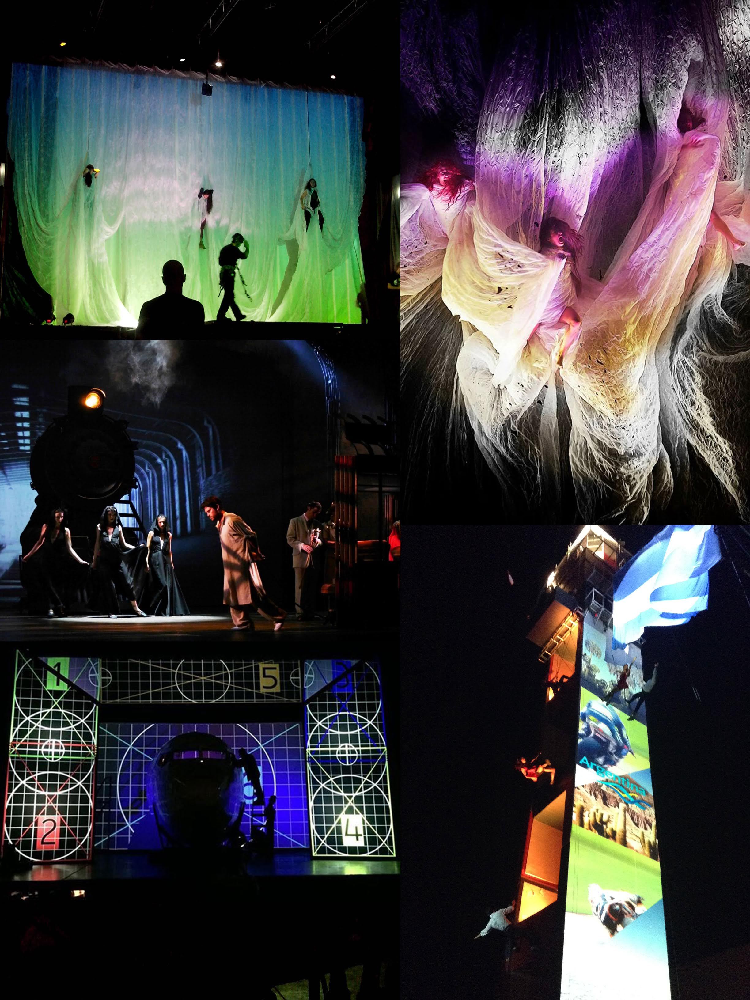
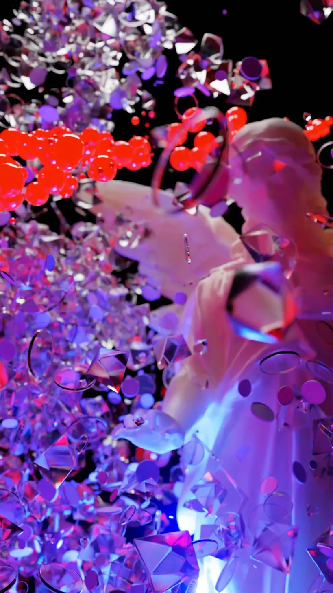
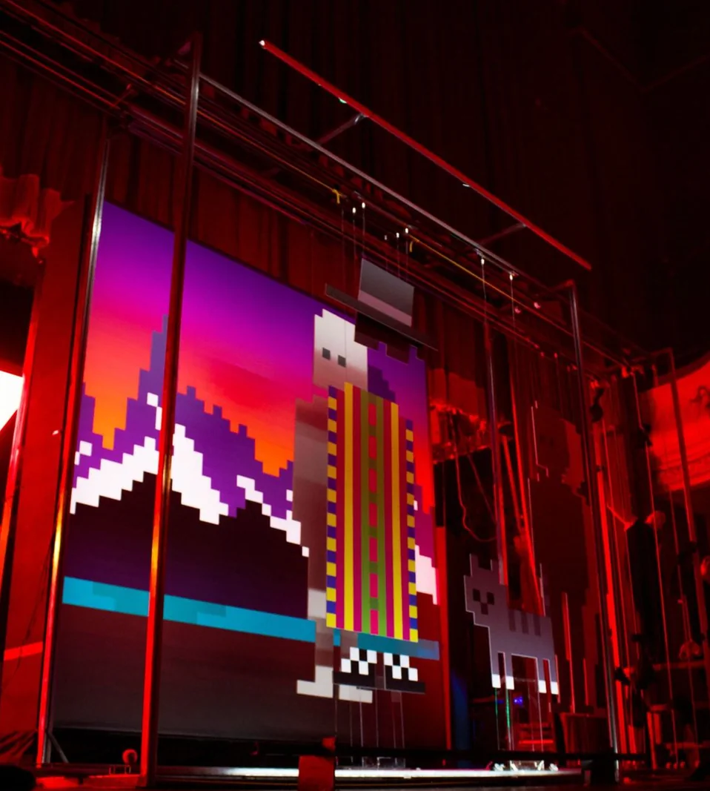
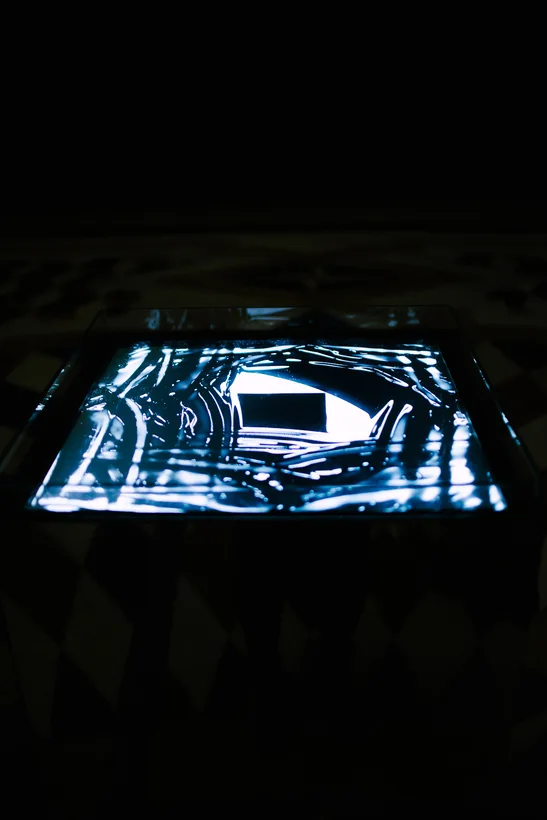
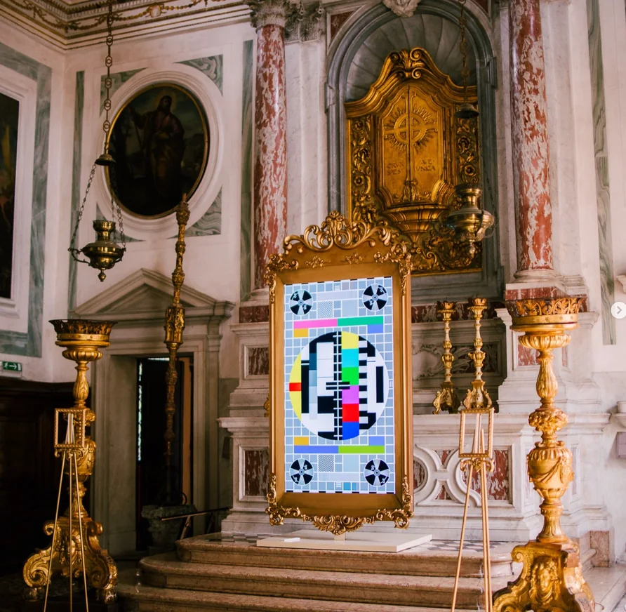
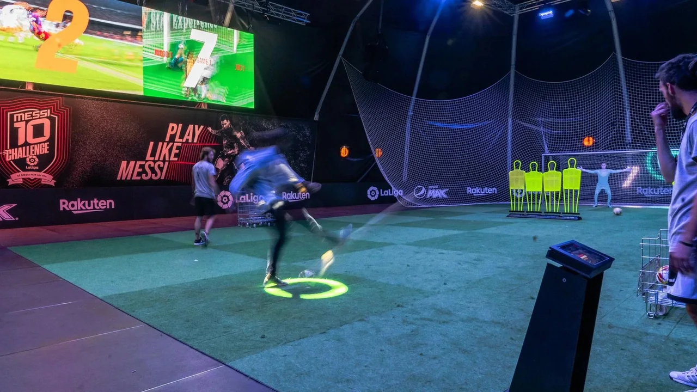
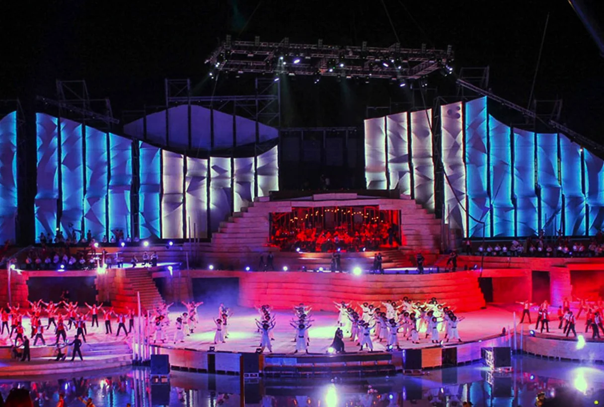

Concept and creative strategy.
We work upstream, defining what an experience should be before any technology or space is decided. We turn objectives into experience concepts with a clear audience logic and production direction.
Independent creative and innovation studio
An independent creative and innovation studio. We design and produce immersive experiences, interactive installations, and generative systems from first concept through final delivery.
Contact
For commissions, collaborations, and immersive projects, write to us.
info@tidefieldstudio.comStudio
We connect creative strategy, experience design, spatial thinking, and interactive production into formats built for real audiences. Our work spans installations, live environments, brand moments, and cultural programs.
Headquartered in Buenos Aires. Delivering on-site across the Americas, Europe, and beyond.
What we do
We work upstream, defining what an experience should be before any technology or space is decided. We turn objectives into experience concepts with a clear audience logic and production direction.
We design how a space feels and behaves. Light, sound, movement, interaction. We deliver creative direction and technical specifications, executable by our team or external partners.

We build what we design. Real-time audiovisual systems, sensor-driven environments, generative visuals, and large-format installations. End-to-end, from prototype to on-site operation.
Our pipeline integrates AI across generative image and video, coding, and more, optimizing every stage of the process.
We merge native digital creativity, art, and industry, exploring the frictions between physical and digital realities.

Selected work
We led creative strategy, general production, creative direction, and end-to-end realization for the live minting event, building a real-time performance system that translated on-chain parameters into stage cues, lighting, and audiovisual behavior across an eight-hour program.

We led creative strategy, general production, creative direction, and end-to-end realization for an immersive installation combining real-time fluid simulation, responsive lighting, physical water elements, and generative music, calibrated to the site and delivered for a public-facing exhibition.





A public-facing VR lounge experience placing visitors inside a stadium at the emotional peak of a World Cup final, designed for continuous operation across repeated sessions.

End-to-end design and integration of a synchronized audiovisual architecture for a large-scale outdoor amphitheatre show, unifying visuals, lighting, and real-time systems across a stage shared by more than 500 performers.

Research and own work
We develop self-initiated projects outside the client pipeline, experiments and installations that feed directly back into how we work. The studio has shown this work at international festivals and exhibitions.
How we engage
We engage from first idea or from a finished brief. Our team handles concept, design, and production in-house, with a track record of delivery across the United States, Europe, and Latin America.
Archive
Moving image studies and production fragments. Hover or scroll to preview; click to open a larger muted playback.